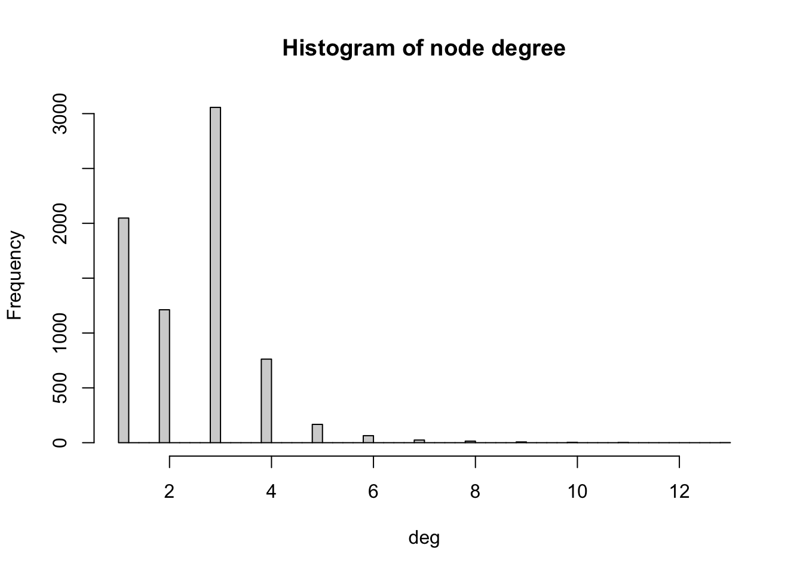
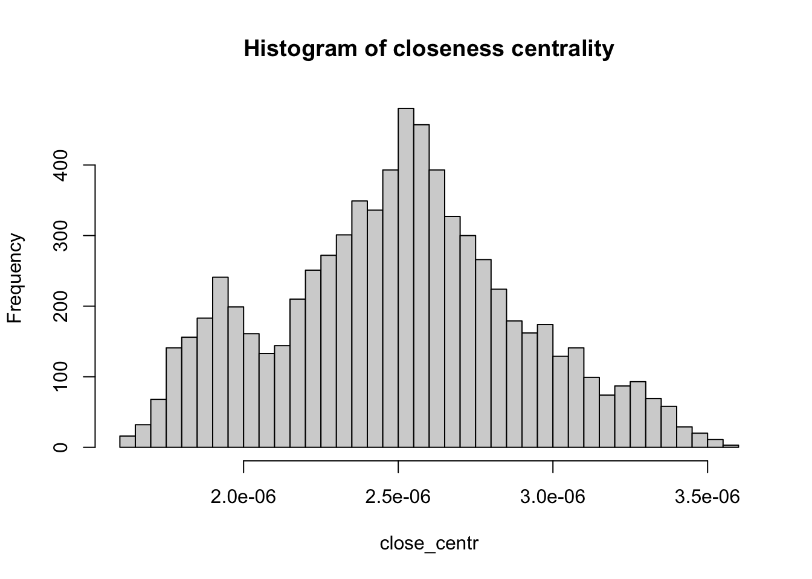
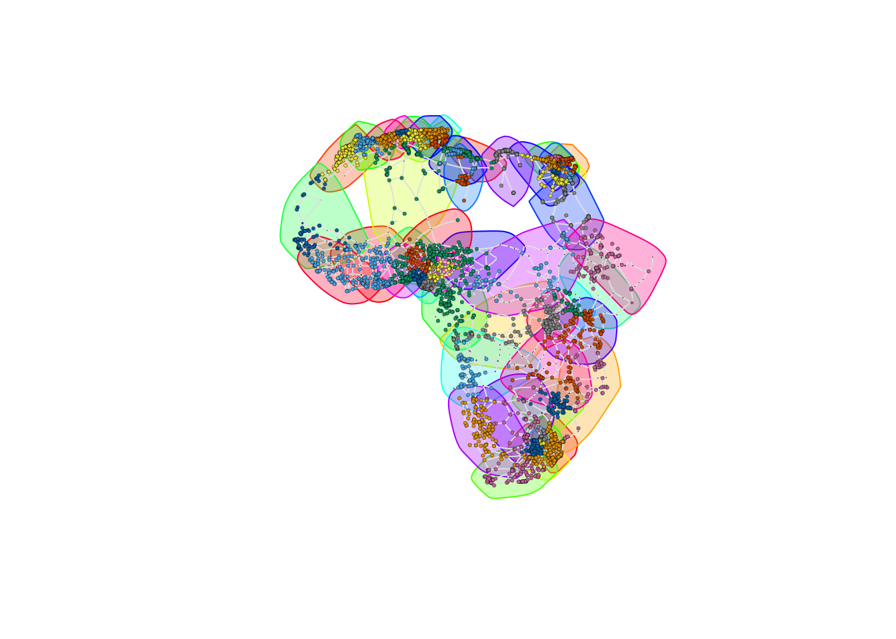

#Support for simple features, a standardised way to encode spatial vector data
library(sf)
#Data manipulation
library(dplyr)
# An R package for network manipulation and analysis
library(igraph)
# Provides a number of useful functions for working with character strings in R
library(stringr)3 The African road network
3.1 Data
3.2 Creating a network from a data frame
df_nodes <- read.csv("https://raw.githubusercontent.com/rafaelprietocuriel/AfricanUrbanNetwork/main/AfricaNetworkNodes.csv")
df_edges <- read.csv("https://raw.githubusercontent.com/rafaelprietocuriel/AfricanUrbanNetwork/main/AfricaNetworkEdges.csv")g_africa <- graph_from_data_frame(d = df_edges,
vertices = df_nodes,
directed = FALSE)head(V(g_africa)$name)[1] "2320" "5199" "7098" "4220" "4858" "5331"vertex_attr_names(g_africa)[1] "name" "agglosName" "x" "y" "Pop2015"
[6] "ISO3" "Region" "Between" "degree" edge_attr_names(g_africa)[1] "l" "h" "time" "timeU" "timeUCB" "border" 3.2.1 Visualising the African road network as a spatial network
V(g_africa)$size <- 0.035*(V(g_africa)$Pop2015/10000)^0.72
plot(g_africa, vertex.size=V(g_africa)$size, edge.arrow.size=.15, edge.arrow.width=.2, edge.curved=0.1, edge.width=1, edge.color ="gray90",
vertex.color="red", vertex.frame.color="black", vertex.frame.width=0.2,
vertex.label=" ", vertex.label.color="black",
vertex.label.cex=.65) 
3.3 Network metrics
3.3.1 Density
edge_density(g_africa, loops=FALSE)[1] 0.00033811423.3.2 Reciprocity
reciprocity(g_africa)[1] 13.3.3 Degree
# Compute degree of the nodes given by v belonging to graph g_US, in this case the in-degree
deg <- degree(g_africa, v=V(g_africa))
# Produces histogram of the frequency of nodes with a certain in-degree
hist(deg, breaks = 50, main="Histogram of node degree")
V(g_africa)$agglosName[degree(g_africa)==max(degree(g_africa))][1] "Duduza Central"V(g_africa)$name[degree(g_africa)==max(degree(g_africa))][1] "2896"degree(g_africa, v=c("2896"), mode="in")2896
13 3.3.4 Distances
shortest_paths(g_africa,
from = V(g_africa)$agglosName=="Cairo",
to = V(g_africa)$agglosName=="Lagos",
weights=NA, #If weights=NULL and the graph has a weight edge attribute, then the weigth attribute is used. If this is NA then no weights are used (even if the graph has a weight attribute)
output = "both") # outputs both path nodes and edges$vpath
$vpath[[1]]
+ 59/7361 vertices, named, from 6926712:
[1] 2320 8796 1023674 1015370 1299090 1299093 1301757 1057349 1308445
[10] 1326309 1319765 1319556 1140285 384 1322302 1322301 1305663 1082455
[19] 1128117 1097655 1083037 1101127 1101105 1111692 1099482 1099481 1057687
[28] 1069131 1066967 1066959 1180969 1127095 8328 1288 234 8290
[37] 1057841 1935 2828 2865 6741 3183 6569 2811 1189414
[46] 1072547 7803 1113823 49 5048 2507 1120071 7367 1336325
[55] 1297437 1297438 1454 5480 5199
$epath
$epath[[1]]
+ 58/9159 edges from 6926712 (vertex names):
[1] 2320 --8796 8796 --1023674 1015370--1023674 1015370--1299090
[5] 1299090--1299093 1299093--1301757 1057349--1301757 1057349--1308445
[9] 1308445--1326309 1319765--1326309 1319556--1319765 1140285--1319556
[13] 384 --1140285 384 --1322302 1322301--1322302 1305663--1322301
[17] 1082455--1305663 1082455--1128117 1097655--1128117 1083037--1097655
[21] 1083037--1101127 1101105--1101127 1101105--1111692 1099482--1111692
[25] 1099481--1099482 1057687--1099481 1057687--1069131 1066967--1069131
[29] 1066959--1066967 1066959--1180969 1127095--1180969 8328 --1127095
[33] 8328 --1288 234 --1288 8290 --234 8290 --1057841
[37] 1935 --1057841 1935 --2828 2865 --2828 6741 --2865
+ ... omitted several edges
$predecessors
NULL
$inbound_edges
NULLdiameter(g_africa, directed=TRUE, weights=NA)[1] 138mean_distance(g_africa, directed=TRUE, weights=NA)[1] 55.86023.3.5 Centrality
close_centr <- closeness(g_africa, weights=NA) #using unweighted edges
hist(close_centr, breaks = 50, main="Histogram of closeness centrality")
between_centr <- betweenness(g_africa, v = V(g_africa), directed = TRUE, weights = NA)
hist(between_centr, breaks = 30, main="Histogram of betweenness centrality")
3.3.6 Hubs and authorities
hs <- hub_score(g_africa, weights=NULL)$vector #In this case, we use the weighted edges
hist(hs, breaks = 50, main="Histogram of hub score")
as <- authority_score(g_africa, weights=NULL)$vector
hist(as, breaks = 50, main="Histogram of authority score")
c = cluster_fast_greedy(g_africa)
plot(c, g_africa, vertex.size=V(g_africa)$size, edge.arrow.size=.15, edge.arrow.width=.2, edge.curved=0.1, edge.width=1, edge.color ="gray90",
vertex.color="red", vertex.frame.color="black", vertex.frame.width=0.2,
vertex.label=" ", vertex.label.color="black",
vertex.label.cex=.65)